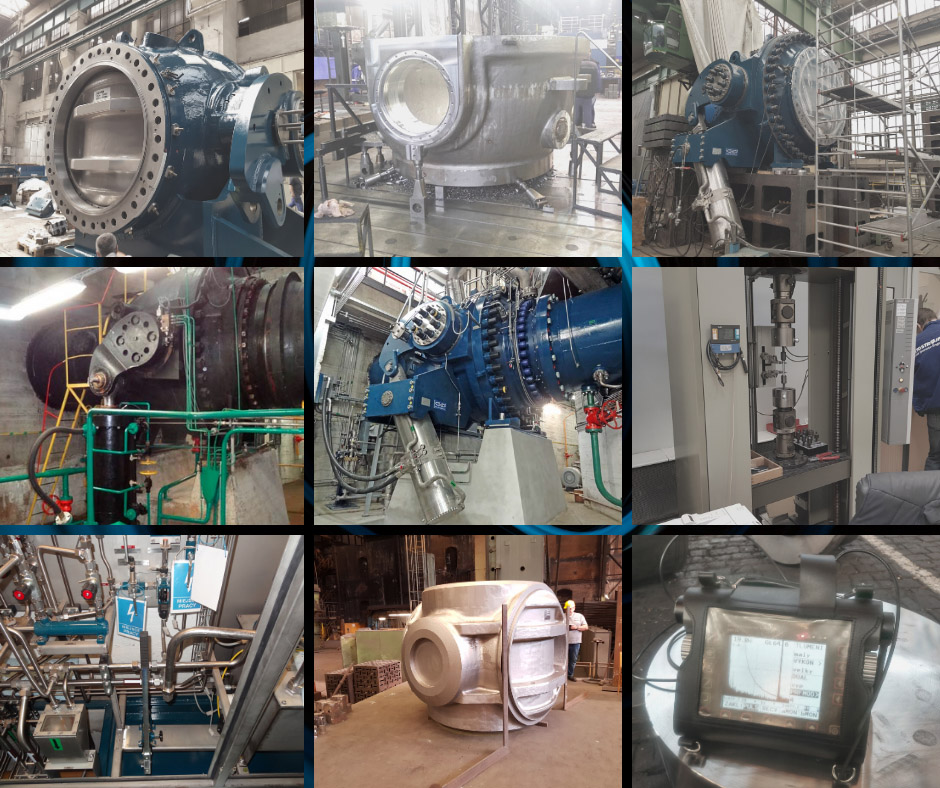

Witam na mojej stronie. Zapraszam do skorzystania z profesjonalnych usług inżyniera mechanika oraz inżyniera spawalnika IWE. Mechanika i budowa maszyn od zawsze mnie interesują. Uwielbiam wyzwania oraz sytuacje w których trzeba wykazać się doświadczeniem, pomysłem oraz konstruktywnym myśleniem. Cały czas rozwijam swoją wiedzę oraz zdobywam cenne doświadczenie. Moją największą pasją jest motoryzacja i wszystkie zagadnienia z mechaniką oraz elektromechaniką samochodową i motocyklową. W swojej karierze zawodowej zdobywałem cenne doświadczenie przy wytwarzaniu wielkogabarytowych konstrukcji stalowych oraz pracach modernizacyjnych – remontowych maszyn i urządzeń. Brałem również udział w odbiorach konstrukcji stalowych w odlewniach zlokalizowanych w Europie (Czechy, Słowenia oraz Francja).
Prywatnie jestem szczęśliwym mężem i ojcem dwójki wspaniałych dzieci.
Zapraszam do kontaktu.
Zachęcam do rozmowy telefonicznej lub korespondencji pocztą elektroniczną. Na podstawie Państwa oczekiwań związanych z inżynierią mechaniczną oraz konstrukcjami stalowymi określimy ramowy plan wspólnej pracy.
Pozdrawiam,
Zakres działalności
-
Inżynier Spawalnik - IWE
- Wprowadzanie optymalnych pod względem technicznym oraz ekonomicznym metod i procesów spawalniczych,
- Wprowadzenie nowych metod spawalniczych – np. metoda spawania CMT (Cold Metal Transfer) do wykorzystania również na stanowiskach zrobotyzowanych – cele spawalnicze.
- Bieżąca analiza stanu technologii oraz technik spawalniczych wraz z oceną ich prawidłowości.
- Nadzór nad realizacją procesów spawalniczych w produkcji,
- Analiza dokumentacji konstrukcyjnej pod względem technologiczności spawalniczej,
- Analiza zgodności dokumentacji konstrukcyjnej i technologicznej z obowiązującymi normami spawalniczymi,
- Opracowanie specjalistycznej dokumentacji technologii spawania, takich jak: Zakładowa Instrukcja Technologiczna Spawania WPS, plany spawania,
- Prowadzenie spraw związanych z uzyskaniem przez zakład odpowiednich uprawnień spawalniczych, stosownie do wykonywanych robót i wymogów stawianych przez odbiorców urządzeń,
- Prowadzenie ewidencji spawaczy oraz nadzorowanie ich zatrudnienia w zakresie posiadanych uprawnień. Planowanie szkoleń z zakresu spawalnictwa oraz weryfikacji uprawnień spawaczy,
- Udział w modernizacji i rozwoju zakładu w zakresie związanym ze spawalnictwem. Planowanie i wnioskowanie zakupów sprzętu spawalniczego oraz prowadzenie technicznej strony procedury zakupowej, polegającej na: pozyskaniu i analizie ofert, dokonaniu zakupu wyposażenia spawalniczego.
- Prowadzenie nadzoru nad prawidłowym stosowaniem materiałów dodatkowych oraz nad wykorzystaniem maszyn i urządzeń do spawania,
- Konsultacja spawalnicza opracowań wykonywanych przez pracownie biura technologicznego oraz konstrukcyjnego,
- Weryfikacja działań korygujących. Określenie dopuszczalnej zmiany połączeń i wskazanie właściwej technologii. W razie stwierdzenia potrzeby dokonanie uzgodnień z biurem konstrukcyjnym oraz technologicznym,
- Koordynacja i nadzór w podległej komórce organizacyjnej nad prawidłową realizacją zgodnie z przyjętymi procedurami i instrukcjami Systemu Jakości,
- Współpraca z zewnętrznymi jednostkami nadzoru spawalniczego – Instytut Spawalnictwa, UDT, TÜV, SLV, akredytowane laboratorium spawalnicze uznawane przez w/w jednostki nadzoru spawalniczego
- Prace ślusarskie i spawalnicze, wykonywanie połączeń spawanych metoda 141 TIG
-
Budowa maszyn i urządzeń
- Projektowanie maszyn z wykorzystaniem oprogramowania CAD
- Diagnostyka maszyn z wykorzystaniem diagnostyki drganiowej. Weryfikacja układów pod względem ryzyka wystąpienia poważnej awarii i sposobów na jej uniknięcie.
- Wprowadzanie nowych rozwiązań do istniejących urządzeń - polepszenie własności Eksploatacyjnych
- Dobór elementów wykonawczych maszyn
- Dostawa części zamiennych, uszczelnień oraz armatury
- Przygotowanie rysunków elementów detalicznych przeznaczonych do wycięcia gazowego, laserowego oraz plazmowego
- Tworzenie schematów hydraulicznych i pneumatycznych maszyn i urządzeń
- Tworzenie opisów technicznych przedmiotów zamówienia – inwestycje remontowe oraz modernizacyjne
- Doradztwo przy prowadzeniu inwestycji remontowych oraz modernizacyjnych
- Przygotowanie dokumentacji maszyn i urządzeń będących pod nadzorem Urzędu Dozoru Technicznego oraz dokumentów rejestracyjnych urządzenie ( Urządzenie ciśnieniowe oraz Urządzenia transportu bliskiego) oraz bezpośredni udział w odbiorze UDT.
- Prowadzenie tematyki urządzeń będących pod nadzorem Urzędu Dozoru Technicznego. Bieżące odbiory, odbiory po remontach i modernizacjach.
- Opracowanie programów na maszyny CNC
- Serwis maszyn, lokalizowanie i usuwanie awarii, usterek oraz dokonywanie napraw,
- Obróbka skrawaniem metali (tokarka, frezarka, wiertarka oraz piła taśmowa)
- Modernizacja maszyn i urządzeń
- Uruchomienia nowych maszyn i urządzeń lub maszyn po transferach
- Dostosowanie maszyn i urządzeń do wymogów dyrektywy maszynowej oraz BHP - Eksploatacja maszyn i urządzeń technicznych (wg wymagań dyrektyw 2006/42/WE oraz 2009/104/WE)
-
Automatyka
- Sterowniki PLC
- Wizualizację procesów produkcyjnych
- Automatyzacja procesów technologicznych oraz produkcyjnych,
-
Dokumentacja
- Opracowanie arkuszy obliczeniowych Excel
- Opracowanie instrukcji eksploatacji w oparciu o Rozporządzenie Ministra Gospodarki, Pracy i Polityki Społecznej
- Tworzenie dokumentacji w programach Microsoft Office
- Opracowanie opisów technicznych maszyn i urządzeń
- Dokumentację prac remontowych oraz modernizacyjnych
- Tworzenie sprawozdań technicznych z wykonanych prac
- Opracowanie instrukcji technologicznych i konstrukcyjnych
- Opiniowanie dokumentacji techniczno-ruchowej (DTR) i inwestycyjnej,
- Odtwarzanie schematów i dokumentacji technicznej,
-
Bezpieczeństwo
- Opracowanie instrukcji BHP
- Ocena maszyn na zgodność z Dyrektywą Maszynową
- Ocena układów sterowania maszyn (weryfikacja nowych lub istniejących systemów sterowania pod kątem wymagań norm bezpieczeństwa),
- Ocena dokumentacji technicznej maszyn,
- Doradztwo techniczne,
- Wdrażanie zaleceń dostosowawczych
-
Mechanika i elektromechanika samochodowa
Mechanika i elektromechanika samochodowa:
- Mobilna diagnostyka komputerowa VAG (opis poniżej)
- Montaż wyposażenia dodatkowego (opis poniżej)
- Mycie elementów wyposażenia samochodów za pomocą myjki ultradźwiękowej
- Naprawy i modyfikacje mechaniczne
- Wiązki i układy elektryczne
- Usługi dodatkowe (opis poniżej)
Mobilna diagnostyka VAG:
Realizuję usługę diagnostyki komputerowej w pojazdach z grupy VAG (VW, Audi, Skoda, Seat), tj. odczyt i kasowanie błędów, adaptacje i kodowanie sterowników, tworzenie logów, weryfikacja przebiegu, ocena stanu silnika i jego podzespołów (np. turbosprężarki), uruchamianie "ukrytych" funkcji sterowników i wiele innych. Usługi realizuję przy użyciu profesjonalnego, oryginalnego sprzętu diagnostycznego dedykowanego do w/w pojazdów. Usługa realizowana jest mobilnie - w miejscu dogodnym dla klienta. Zapraszam do kontaktu w celu uzyskania dodatkowych informacji.Montaż wyposażenia dodatkowego
Realizuję usługi montażu oryginalnego wyposażenia pojazdów z grupy VAG (Audi, VW, Skoda, Seat), takiego jak systemy nagłośnienia, nawigacji, tempomatów, komputera pokładowego FIS, elektrycznego sterowania foteli, tapicerki, wyposażenia elektrycznego, elementów mechaniki i wiele podobnych. Zapraszam do kontaktu w celu uzyskania dodatkowych informacji.Usługi dodatkowe:
- Sprzedaż detaliczna i hurtowa części samochodowych i motocyklowych
- Sprzedaż detaliczna i hurtowa chemii samochodowej
- Przygotowanie samochodów do sprzedaży wraz z przygotowaniem ogłoszenia oraz dokumentacji fotograficznej samochodu
- Sprzedaż samochodów osobowych i motocykli
- Sprowadzenie pojazdów na zamówienie
- Weryfikacja pojazdu przed zakupem
Przebieg kariery zawodowej
-
Kopex – Przedsiębiorstwo Budowy Szybów S.A.
- Opracowanie dokumentacji konstrukcyjnej i technologicznej,
- Nadzór nad remontami maszyn i urządzeń oraz wytwarzaniem konstrukcji stalowych,
- Nadzór nad pracami wykonywanymi pod ziemią przy montażu konstrukcji górniczych (rurociągi, pomosty, obudowy stalowe itp.),
- Projektowanie maszyn oraz oprzyrządowania produkcyjnego (środowisko SolidWorks),
- Opracowania projektów zgodnie z obowiązującymi normami,
- Bieżąca obsługa technologiczna zleceń produkcyjnych,
- Opracowania dokumentacji spawalniczej dla wykorzystywanych metod spawania 111,135,141,311.
-
Banimex – Wytwórnia Konstrukcji Stalowych
- Opracowania dokumentacji rysunkowej i technologicznej,
- Opracowania projektów zgodnie z obowiązującymi normami,
- Bieżąca obsługa technologiczna zleceń produkcyjnych,
- Programowanie wypalarek CNC – środowisko Lantek,
- Opracowania dokumentacji spawalniczej.
-
SDA Sp.J
- Projektowanie maszyn oraz oprzyrządowania produkcyjnego z wykorzystaniem oprogramowania 2D i 3D-SolidWorks,
- Nadzór nad montażem zaprojektowanych narzędzi, maszyn oraz urządzeń,
- Projektowanie stanowisk zrobotyzowanych (komórki spawalnicze),
- Współpraca z przedstawicielami firm branży motoryzacyjnej,
- Projektowanie stanowisk testowych do przemysłu motoryzacyjnego
- Opracowanie dokumentacji spawalniczej
-
Gestamp Polska Sp. z o.o.– Inżynier procesu spawania - Spawalnik IWE
- Projektowanie maszyn oraz oprzyrządowania produkcyjnego z wykorzystaniem oprogramowania Catia,
- Nadzór nad zrobotyzowanymi stanowiskami spawalniczymi (roboty spawalnicze ABB, urządzenia spawalnicze Fronius), metoda spawania MAG oraz CMT,
- Bieżąca obsługa technologiczna oraz konstrukcyjna zleceń produkcyjnych,
- Opracowania dokumentacji spawalniczej,
- Dbanie o dobry stan techniczny urządzeń i maszyn oraz wykonywanie bieżących napraw,
- Bieżący kontakt z odbiorcami produktów – grupa VAG (Skoda, Audi, Seat, Volkswagen),
- Weryfikacja podwykonawców, materiałów spawalniczych, uprawnień spawaczy,
- Udział w projektach modyfikacji komórek spawalniczych.
-
PGE Energia Odnawialna S.A. Oddział ZEW Porąbka - Żar – Inżynier Mechanik – Inżynier Spawalnik
- Remonty maszyn i urządzeń będących na wyposażeniu elektrowni ZEW Porąbka - Żar
- Bieżące usuwanie usterek i awarii
- Diagnostyka maszyn z wykorzystaniem diagnostyki drganiowej oraz oprogramowania Compass 6000
- Prowadzenie inwestycji remontowo - modernizacyjnych
- Nadzór nad pracownikami działu utrzymania ruchu
- Nadzór nad firmami zewnętrznymi prowadzącymi prace na terenie elektrowni min. ZRE Gdańsk, Energomontaż, Imkius, Kraj, ZRE Katowice, Vibropomiar, Soley Balice, Hydac czy Dźwig Serwis
- Opracowanie dokumentacji konstrukcyjnej i technologicznej (Inventor),
- Pełnienie funkcji kierownika działu mechanicznego,
- Odbiory elementów stalowych wytwarzanych w odlewniach w Europie,
- Weryfikacja podwykonawców, materiałów spawalniczych, uprawnień spawaczy,
- Nadzór nad wykonawstwem połączeń spawanych przez pracowników elektrowni oraz firm zewnętrznych
- Opracowania dokumentacji spawalniczej dla wykorzystywanych metod spawania 111,131, 135,141,311.
- Wydawanie poleceń pracy w formie pisemnej i ustnej (uprawnienia SEP na poziomie eksploatacji i dozoru - mechaniczne oraz elektryczne)
- Odpowiedzialność za urządzenia będące pod nadzorem UDT - urządzenia ciśnieniowe oraz urządzenia transportu bliskiego
Realizacje
-

Wymiana zaworów kulowych DN1650 mm PN66 – nadzór nad realizacją zadania, odbiory konstrukcji stalowych oraz wyposażenia zaworu. Odbiory odbywały się w Francji, Słowenii oraz Czechach. Nadzór nad montażem i uruchomieniem w Elektrowni Porąbka – Żar. -
Konstrukcja stalowa hali marki VW zlokalizowanej w Białężycach koło Poznania. Nadzór spawalniczy nad realizacją zadania, programowanie wypalarek CNC – przygotowanie elementów do produkcji elementów stalowych zgodnie z dokumentacją konstrukcyjną. Przygotowanie dokumentacji spawalniczej oraz kontrola jakości wytworzonych elementów. -
Modernizacja komórki spawalniczej produkującej elementy konstrukcyjne samochodów grupy VAG. Modernizacja z wykorzystaniem robotów ABB oraz zastosowania metody spawania CMT (Cold Metal Transfer). Nadzór nad realizacją modernizacji, konfiguracja robotów spawalniczych – ustawienie trajektorii robota wraz z doborem parametrów spawania dla każdego połączenia. Optymalizacja oraz automatyzacja procesu produkcyjnego. -
Modernizacja systemu diagnostycznego w oparciu o diagnostykę drganiową z wykorzystaniem oprogramowania Compass 6000 produkcji Brüel & Kjær. Nadzór nad realizacją zmiany systemu diagnostycznego, nadzór nad przeniesieniem baz danych z poprzedniej wersji oprogramowania. Bieżąca diagnostyka poprawności działania systemu diagnostycznego wraz z koordynacją usuwania usterek przez Wykonawcę modernizacji. -
Nadzór nad cykliczną wymianą suwnic zainstalowanych w Elektrowni Porąbka – Żar, udział w projektowaniu nowych rozwiązań, udział w realizacji oraz odbiorach przedmiotów umowy. Zakończeniem modernizacji suwnic jest udział w odbiorach przy udziale Inspektora Urzędu Dozoru Technicznego. -
Nadzór nad wymianą układów hydraulicznych sterujących urządzeniami wykonawczymi w Elektrowni Porąbka – Żar. Układy olejowo – ciśnieniowe zaworów motylowych oraz zaworów kulowych. Układy centralnego smarowania hydrozespołów, instalacje ppoż. -
Naprawa układów mechanicznych znajdujących się na wyposażeniu Elektrowni Porąbka – Żar min. turbiny wodne, sprężarki, układy olejowo – ciśnieniowe, łożyska, układy hamulcowe oraz instalacje technologiczne (sprężone powietrze, hydraulika oraz pneumatyka). -
Projektowanie maszyn i narzędzi z wykorzystaniem oprogramowania CAD -
Diagnostyka komputerowa samochodów grupy VAG – naprawy mechaniczne oraz elektryczne, montaż wyposażenia dodatkowego. -
Konstrukcje stalowe, maszyny i urządzenia. Nadzór nad wykonaniem, remontami oraz modernizacjami maszyn i urządzeń – przemysł górniczy.
Posiadane uprawnienia
-
Certyfikat Międzynarodowego Inżyniera Spawalnika IWE
-
Certyfikat Programowania i obsługi obrabiarek CNC (Fanuc)
-
Świadectwo kwalifikacyjne – grupa 1 i 2 (eksploatacja + dozór): Urządzenia wytwarzające, przetwarzające, przesyłające i zużywające ciepło oraz inne urządzenia energetyczne.
Uprawnienia SEP W następujących punktach:
Grupa I – Uprawnienia Elektryczne punkty 1.1, 1.2, 1.3, 1.4, 1.10 Eksploatacja + Dozór
Grupa II – Uprawnienia Mechaniczne punkty 2.3, 2.5, 2.6, 2.7, 2.10 Eksploatacja + Dozór
Wykształcenie
-
2013-2015
Politechnika Krakowska
Wydział Mechaniczny, kierunek Międzynarodowy / Europejski Inżynier Spawalnik IWE, studia podyplomowe, certyfikat IWE.
-
2012-2013
Politechnika Śląska
Politechnika Śląska Wydział Mechaniczny - Technologiczny, kierunek Mechatronika, specjalność: projektowanie i eksploatacja systemów mechatronicznych, studia magisterskie, magister inżynier.
-
2008-2012
Politechnika Śląska
Politechnika Śląska Wydział Mechaniczny - Technologiczny, kierunek Mechatronika, studia inżynierskie, inżynier.
-
2004-2008
Zespół Szkół Technicznych w Bytomiu
Kierunek mechatronika, specjalność: sterowniki PLC
Kontakt
Inżynieria Maszyn i Konstrukcji Stalowych Tomasz Groszek
- Adres biura ul. Przecznia 91a
43-340 Kozy - E-Mailgroszektomasz@gmail.com
- Telefon519 190 711